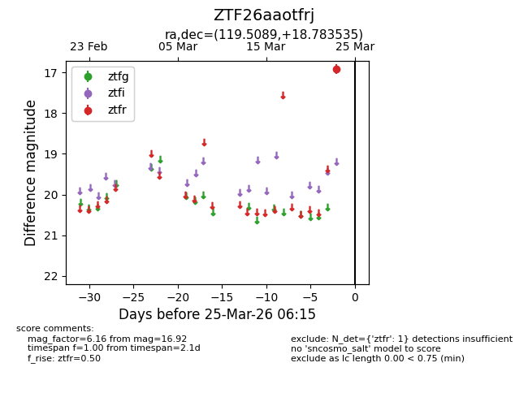
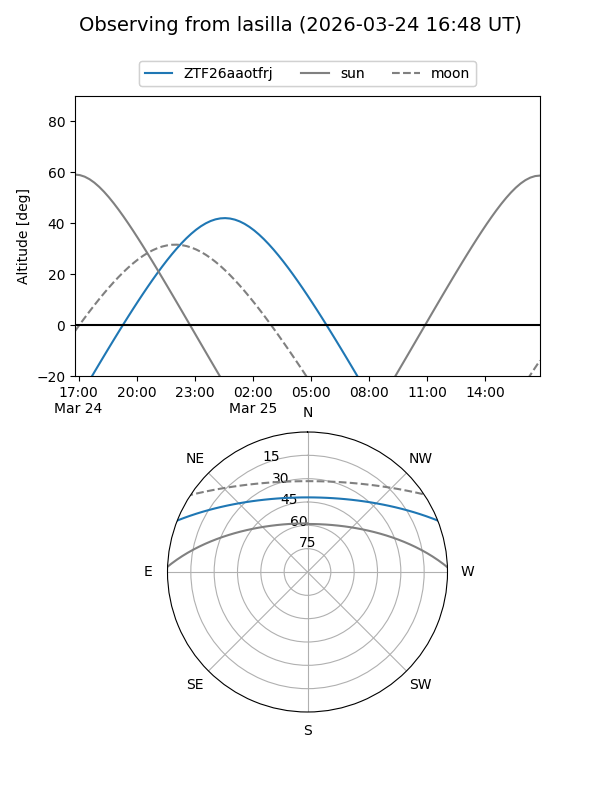
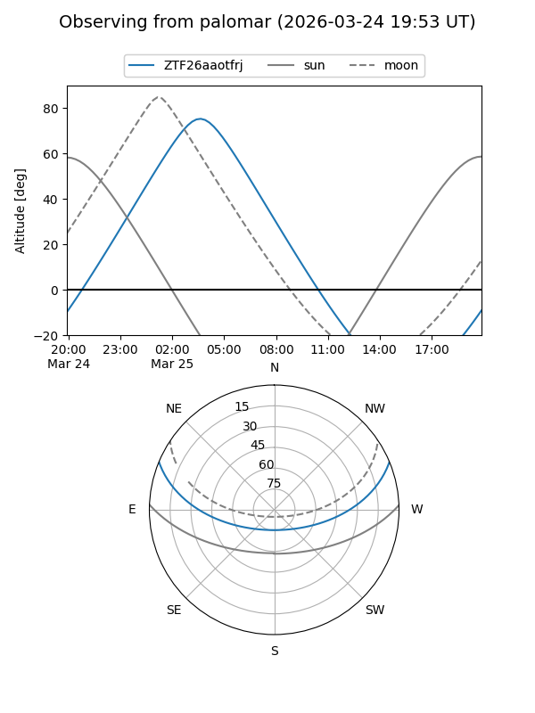

ZTF26aaotfrj
Target ZTF26aaotfrj at 2026-03-25 06:17
Aliases and brokers:
FINK: link
Lasair: link
ALeRCE: link
alt names
ZTF26aaotfrj (ztf,fink_ztf)
Coordinates:
equatorial (ra, dec) = 119.5089,+18.78353
equatorial (HMS+DMS) = 07:58:02.13,+18:47:00.73
galactic (l, b) = (202.7516,+22.84490)
Flags:
Photometry:
last ztfr=16.92
1 ztfr detections
Lightcurve

Visibility


Additional plots